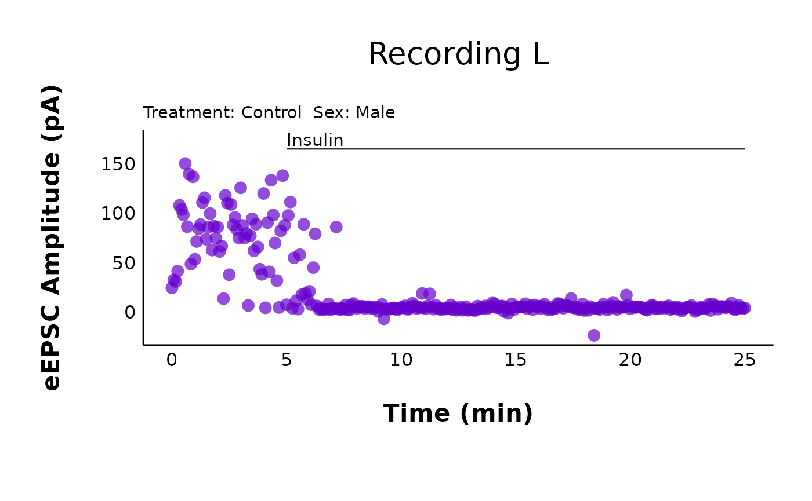
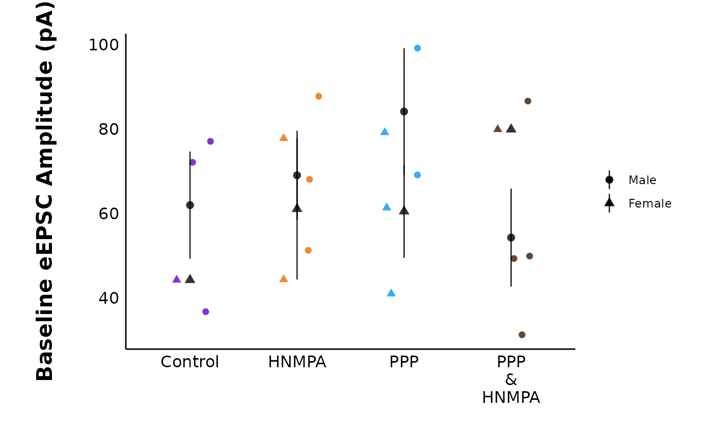

How to use patchclampplotteR
patchclampplotteR is an exciting new package that will
help you analyze and plot your patch clamp data efficiently. This
vignette will walk you through the complete process of transforming raw
data into publication-quality plots!
Set up R Project
To use this package, set up a new folder on your computer. Give the
folder a short, distinctive name with no spaces (use hyphens instead). I
would strongly recommend adding subfolders with names like
Data, Figures, and Thesis. This
will help with organization and make it easier to expand to future
projects, like writing your thesis in R.

A screenshot of the file structure of a typical project. There are folders for data, figures, scripts and the thesis. Files with a ‘.’ in the name, like .gitignore or .Rhistory, are automatically generated when you set up your project. If you aren’t using git to track your files, don’t worry about the filenames that start with ‘git’
In RStudio, click on File -> New project
-> Existing Directory and choose the folder you just
created. Click on Create Project and R will refresh to a
blank, new project. You’re now ready to create a new R Markdown (.Rmd)
file and start your analysis!
Install and load package
You can install the development version of patchclampplotteR from GitHub. Only do this once per computer, or if there’s a major update.
pak::pak("christelinda-laureijs/patchclampplotteR")And then load the package each time you want to use it:
About the data
This sample dataset consists of whole-cell patch clamp recordings of neurons within the dorsomedial hypothalamus (DMH), a brain region critical for appetite regulation, stress responses and other processes. I recorded evoked excitatory post-synaptic currents for five minutes under baseline conditions, then added 500 nM insulin to the perfusion solution, and I continued recording for 25 minutes.
My goal is to determine if insulin affects evoked current amplitude in DMH neurons.
Analyze data in Clampfit
Please see the vignettes in the Articles page to learn about how to analyze data in Clampfit. These include Evoked Current Analysis, Spontaneous Current Analysis, and Action Potential Analysis.
Import raw .csv files
Cell Characteristics
First, I must import a .csv file containing information
about factors such as the animal’s age and sex, the cell ID number, and
other details. Please see the Required columns section
below for full explanations of the required columns and what you should
include. There is also a link to download an empty .csv
file with the headers required for this dataset:
Required columns
The columns listed below are required in the raw .csv file. If you do not have data for any of these columns, please still include the column as an “empty” column to prevent errors caused by missing columns.
Don’t worry about missing data! R will automatically fill blank cells with ‘NA’ values, which will be ignored in the analyses.
-
letterA character value that is a unique identifier for a single recording. You can use this link recordings that came from the same cell. For example, from cell “A” you may have action potential recordings, evoked current data, and spontaneous current data. -
cellA character or numeric value representing the cell. For example, use3.1.1for animal #3, slice #1, cell #1. -
sexA character value such as “Male” or “Female”. -
XA numeric value representing the x-value of the cell’s location in µm. (Leave blank if you don’t have this). -
YA numeric value representing the y-value of the cell’s location in µm. (Leave blank if you don’t have this). -
ageA numeric value representing the animal’s age. Can be any value as long as the time units are consistent throughout (e.g. don’t mix up days and months when reporting animal ages). Do not use characters (e.g. Do NOT writeP31. Use31instead). -
animalA numeric value representing the animal’s ID number. -
synapsesA character value such as “Glutamate” or “GABA”. -
treatmentA character value such as “Control” or “HNMPA”. -
categoryA numeric value representing an experiment type. For example, ‘1’ may mean 4 seconds of high-frequency stimulation (HFS), ‘2’ may mean an experiment where you added insulin, and ‘3’ may mean HFS with insulin in the bath at all times. A category is the top-level division of your data. You can then have subgroups using thetreatmentvariable. For example, perhaps you added insulin (Category2) and also had the antagonist HNMPA present. This would beCategory = 2, Treatment = HNMPA.
-
R_aA list of values for the access resistance, which would have been monitored at several timepoints throughout the recording. See the sectionR_aformatting below. -
days_aloneA numeric value representing the number of days that the animal was alone in a cage. This will always be 1 for some treatments, like fasting, but should ideally be low to reduce the effects of social isolation-related stress. -
animal_or_slicing_problemsA character value (“yes” or “no”) indicating if there were any problems during any point of the slice preparation process or animal handling. For example, use “yes” if the slices were crumpling during slicing or the animal was unusually anxious.)
Note: Since you are using an R Project, it is easy to identify files in sub-folders. For example, you can write
import_cell_characteristics_df("Data/cell_info.csv")to usecell_info.csvlocated within theData/subfolder.
cell_characteristics <- import_cell_characteristics_df("sample_cell_characteristics.csv")
cell_characteristicsRaw evoked current data
Next, I will import the raw evoked current data that has been copied
over from Clampfit (again, please see the Evoked
Current Analysis vignette for details about how to analyze this data
in Clampfit. This is a .csv file containing four columns:
letter, ID, P1 and
P2:
letter: A unique identifier for a single recording, which allows you to link evoked current data, spontaneous current data, action potential, data, and information on cell characteristics.ID: The name of the .abf filename used to obtain the data, which is useful for verifying the recordings and cross-referencing to your lab book.P1: The amplitude of the first evoked current (pA).P2: The amplitude of the second evoked current (pA).
Try to match the capitalization of the column names to the examples listed here. If you do forget to make them lowercase, don’t worry.
add_new_cells()will automatically convert all column names to lowercase for consistency across functions. Capitalized letters will be retained for columns likeID,X,Y,P1, andP2.
sample_eEPSC_data <- read.csv("sample_new_eEPSC_data.csv")
sample_eEPSC_dataAdd new cells
The next step is to merge the raw evoked current data with the cell
characteristics data. add_new_cells() will merge these two
datasets, using letter as the common column. This function
requires three .csv files:
- The new raw data
- The cell characteristics
- An existing
.csvwith raw data that has been previously imported. As your project goes on, you will eventually be appending new data onto your existing datasheet, but if you are starting completely fresh, use a blank.csvfile containing just one value in cellA1calledletter. This column title is all that is needed to allow R to auto-fill in the rest of the new data.
WARNING!! If you are starting from an empty
.csvfile, the.csvin theold_raw_data_csvargument MUST contain at least thelettercolumn name in cell A1. If you try to use a completely empty.csvsheet, R will not recognize it as a valid.csvbecause there is “nothing” for it to read if it is a blank csv.

Use the add_new_cells() function, and carefully read the
warning messages.
first_time_df <- add_new_cells(
new_raw_data_csv = "sample_new_eEPSC_data.csv",
cell_characteristics_csv = "sample_cell_characteristics.csv",
old_raw_data_csv = "empty_old_raw_data_sheet.csv",
data_type = "eEPSC",
write_new_csv = "no",
new_file_name = "",
decimal_places = 2
)#> ℹ Renamed dataframe columns to lowercase
#> ✔ All letters are present in both "/home/runner/work/_temp/Library/patchclampplotteR/extdata/sample_cell_characteristics.csv"
#> and "/home/runner/work/_temp/Library/patchclampplotteR/extdata/sample_new_eEPSC_data.csv".
#> ✔ Letter duplication check passed
#> ℹ All letters in "/home/runner/work/_temp/Library/patchclampplotteR/extdata/sample_new_eEPSC_data.csv" are new relative to "/home/runner/work/_temp/Library/patchclampplotteR/extdata/empty_raw_datasheet.csv"
#> ✔ FX GR HCCheck output messages
add_new_cells() produces several warnings and messages.
One warning lets you know you know that the column names have been
renamed to lowercase. This is to avoid case-sensitive issues from
appearing in later functions.
The first message generated with add_new_cells()
indicate that the sample_cell_characteristics.csv and
sample_new_eEPSC_data.csv have the same cells. This is
useful to catch if you forget to add the cell characteristics for the
new data.
The second message indicates that all letters in the new data are new relative to the existing dataset. This ensures that you don’t accidentally paste in the same data twice, resulting in duplicated data.
The final message prints a list of the letters that have been added to the dataset. In this case, these are “FX”, “GR” and “HC”. It is a good way to confirm that you’ve added the letters you were planning to add.
You can also ask R to produce a list of all of the unique letters in
the dataset. This won’t catch duplicates, but it can help you identify
if a letter is completely missing from the dataset. See, FX
is now included!
unique(first_time_df$letter)
#> [1] "FX" "GR" "HC"This is an example of what the full few rows look like now:
As you collect more data, change the value of
old_raw_data_csv from the empty sheet to your existing raw
data sheet. This function will automatically append new data onto your
existing sheet and save it to a new .csv file (defined by
new_file_name). I am saving it to the Data/
subfolder.
add_new_cells(
new_raw_data_csv = "sample_new_eEPSC_data.csv",
cell_characteristics_csv = "sample_cell_characteristics.csv",
old_raw_data_csv = "Data/Raw-eEPSC-df.csv",
data_type = "eEPSC",
write_new_csv = "no",
new_file_name = "",
decimal_places = 2
)Explore your data
Let’s look at an example of a full dataset. This is the sample raw evoked current dataset included in the package. To reduce the vignette size, I am printing just the first 20 rows. The full dataset contains > 5680 rows!)
head(raw_eEPSC_df, n = 20)You can use dplyr functions to quickly explore your
data. Here’s just one example of a quick and useful analysis:
Count number of cells per sex and treatment
Quick Tip: Want to know how many experiments you still need to do? Run this line of code on the raw data. Here, I filtered the data to category 2 only (experiments where I added insulin) and grouped by treatment. I then counted the number of cells per sex.
Define your colour theme
In this package, you only need to specify your treatment groups and
colours once. You can later refer to this dataframe in
treatment_colour_theme arguments for all of your plotting
functions. The package is loaded with a sample dataframe to help you get
started:
colours and very_pale_colours are specified
as hex codes or named R colours. The only difference between
treatment and display_names is that the
display_names are re-written to look attractive in plots
and tables.
First, check out how many treatment groups you have using
unique(raw_eEPSC_df$treatment).
unique(raw_eEPSC_df$treatment)
#> [1] Control HNMPA PPP PPP_and_HNMPA
#> Levels: Control HNMPA PPP PPP_and_HNMPANext, modify this code to set up your own dataframe with your treatment names and colours.
my_theme_colours <- data.frame(
category = c(2, 2, 2, 2),
treatment = c("Control", "HNMPA", "PPP", "PPP_and_HNMPA"),
display_names = c("Control", "HNMPA", "PPP", "PPP\n&\nHNMPA"),
colours = c("#f07e05", "#f50599", "#70008c", "#DCE319"),
very_pale_colours = c("#fabb78", "#fa98d5", "#ce90de", "yellow")
)Every time a plot contains the argument
treatment_colour_theme, refer to your custom dataframe
(my_theme_colours in this example). To see more information
about defining your own theme, see the Theme
FAQ.
Analyze current amplitude
After you have finished a brief exploration of your data, it is time to analyze it!
Step 1: Normalize currents
The first step is to normalize the current amplitudes within each recording relative to the average current amplitude during the baseline period. This makes it easier to compare across cells that have a wide range of starting amplitudes, since all baseline values will be converted to (roughly) 100%.
Note how I set the minimum and maximum time values. This will limit the data to values between 0 min and 25 minutes.
I set the
interval_lengthto 5 because I wanted to divide my data into 5-minute intervals for later statistical analyses.The baseline period (
baseline_length) lasted 5 minutes. Clampfit recorded the current amplitude as negative values, so I setnegative_transform_currentsto “yes” which will flip the current amplitudes to positive values.
raw_eEPSC_df <- make_normalized_EPSC_data(
filename = "sample_eEPSC_data.csv",
current_type = "eEPSC",
min_time_value = 0,
max_time_value = 25,
interval_length = 5,
baseline_length = 5,
negative_transform_currents = "yes"
)To view the data, type the name of the object
raw_eEPSC_df
raw_eEPSC_dfmake_normalized_EPSC_data() will retain the cell
characteristics and P1 and P2 values from
before. However, you will notice some changes.
If you set negative_transform to “yes”, P1
and P2 will be multiplied by -1. This is to
“flip” current amplitude data that was recorded as negative values in
Clampfit. Since the data are evoked current data
(current_type = "eEPSC"), some new columns are added. They
are:
PPR: The paired-pulse ratio, which is the amplitude of the second evoked current divided by the first evoked current (PPR = P2/P1).interval: The interval that the data belongs to. I set theinterval_lengthto 5, which means the data will be divided into 5-minute intervals. The intervals will have names like “t0to5”, “t5to10”, and so on up until the maximum interval.baseline_range: You probably won’t interact with this much, but this is just a column stating “TRUE” if the time is within the baseline period, or “FALSE” if the time is outside of this range. This is required for the normalization function to identify which values are outside of the baseline (and should be transformed).baseline_mean: This is one number that represents the average evoked current amplitude during the baseline period. This value is different for each recording.P1_transformed: The first evoked current amplitude, normalized relative to the mean baseline amplitude. For example, if the mean baseline amplitude is 80 pA and aP1value is 40 pA,P1_transformedwill be 50%.P2_transformed: The second evoked current amplitude, normalized relative to the mean baseline amplitude of the first evoked current.
Plot raw data
Let’s see what the raw values look like over time!
plot_raw_current_data() will generate a scatterplot of
evoked current amplitude (pA) over time (min) for all cells within the
treatment and category that you specify. Behind the scenes, this really
runs a loop over each letter, generating a ggplot object for each
recording.
Please see the documentation for plot_raw_current_data()
to learn about the arguments in more detail.
raw_eEPSC_control_plots <- plot_raw_current_data(
data = raw_eEPSC_df,
plot_treatment = "Control",
plot_category = 2,
current_type = "eEPSC",
y_variable = "P1",
pruned = "no",
hormone_added = "Insulin",
hormone_or_HFS_start_time = 5,
theme_options = sample_theme_options,
treatment_colour_theme = sample_treatment_names_and_colours
)plot_raw_current_data() will return a list of ggplot
objects. To see all of your plots at once, type the name of the object
that you just made (raw_eEPSC_control_plots):
raw_eEPSC_control_plotsIf you want to observe just one specific plot, you can select it by letter.
raw_eEPSC_control_plots$L
Step 2: Prune data
It is often useful to summarize the data per minute. If you are
familiar with GraphPad Prism’s “prune rows” function,
make_pruned_EPSC_data() will perform the same function.
In this vignette, I’ll use the example of pruning data per minute (
interval_length = 1) because this is what is typically used in the Crosby lab. You can change this value by changing theinterval_lengthto something other than1.
pruned_eEPSC_df <- make_pruned_EPSC_data(
data = raw_eEPSC_df,
current_type = "eEPSC",
min_time_value = 0,
max_time_value = 25,
baseline_length = 5,
interval_length = 1
)
pruned_eEPSC_dfThis function will return a list of three dataframes. To access each
list, type the object name, followed by a dollar sign. For
example, write pruned_eEPSC_df$individual_cells to access
the first dataframe in the list:
pruned_eEPSC_df$individual_cellsIn RStudio, typing up the name of the pruned dataset followed by the dollar sign will show a pop-up with the list of available dataframes.
The three dataframes are:
$individual_cells: This dataframe has the same structure as the raw evoked current data, except the data have been pruned per minute. New columns includemean_P1andsd_P1, and there are some other columns for variance analysis (please see the documentation formake_pruned_EPSC_data()for more details).$for_table: This dataframe has only two columns:letterandP1_transformedwhere the prunedP1values have been collapsed into a list. This is used to create a sparkline inmake_interactive_summary_table().$all_cells: This dataframe contains data that have been grouped by treatment and sex. In this dataframe, the data have been summarized and collapsed into one datapoint per minute for all cells per minute for a specific sex. This is useful for creating summary plots for publication (e.g.plot_summary_current_data()) and for future statistical testing to compare groups.
Plot pruned data
You can use the same plot_raw_current_data() to plot the
pruned data. You will need to make changes to the following
arguments:
-
data: Refer to the third element of the list produced frommake_pruned_EPSC_data(). This is$individual_cells. -
y_variable: Change this to “mean_P1”. -
pruned: Change this to “yes”
pruned_eEPSC_control_plots <- plot_raw_current_data(
data = sample_pruned_eEPSC_df$individual_cells,
plot_treatment = "Control",
plot_category = 2,
current_type = "eEPSC",
y_variable = "mean_P1",
pruned = "yes",
hormone_added = "Insulin",
hormone_or_HFS_start_time = 5,
theme_options = sample_theme_options,
treatment_colour_theme = sample_treatment_names_and_colours
)
pruned_eEPSC_control_plots$L
See how this is the same as the raw data plot, except for it is pruned per minute?
Perform T-tests
The pruned data from all cells within a specific treatment and sex
($all_cells) will enable you to make a summary plot using
plot_summary_current_data(). Before moving forward, you
should perform a t-test assessing changes in the evoked current
amplitude for each 5-minute interval relative to the baseline
period.
Use the perform_t_tests_for_summary_plot() function, and
give the object a useful name. You will later insert this object into
the t_test_df argument of
plot_summary_current_data().
evoked_t_test_results <- perform_t_tests_for_summary_plot(
data = sample_summary_eEPSC_df$summary_data,
test_category = 2,
include_all_treatments = "yes",
list_of_treatments = NULL,
current_type = "eEPSC",
parameter = "amplitude",
baseline_interval = "t0to5",
interval_length = 5,
treatment_colour_theme = sample_treatment_names_and_colours,
save_output_as_RDS = "no"
)Plot summary data
Notice how
datais nowsample_pruned_eEPSC_df$all_cells, andy_variableis “amplitude”. There are lots of customization opportunities when plotting summary data, including adding a representative trace as a .png overlay! You can read more about in the documentation forplot_summary_current_data().

Warning!! If you change
included_sexesto “male” or “female”, you MUST remember to use a t-test that uses the dataset that has been filtered to include one sex only! If you do not do this, the significance stars will not match (e.g. it may show the t-test stars for both sexes, but only one sex is visible).
Step 3: Summarize data
The next step is to group the data by treatment by sex and obtain
summary data. make_summary_EPSC_data() will generate a list
of 2 dataframes. One dataframe (accessible with
$summary_data) grouped the data into intervals and
generated summary statistics (like mean and standard error) for each
point. The interval length was already specified during the
make_normalized_EPSC_data() function from earlier.
summary_eEPSC_df <- make_summary_EPSC_data(
data = sample_raw_eEPSC_df,
current_type = "eEPSC",
save_output_as_RDS = "no",
baseline_interval = "t0to5",
ending_interval = "t20to25"
)Step 4: Percent change data
The second dataframe (accessible with
$percent_change_data) contains information on the percent
change in evoked current amplitude percent_change during a
specific time interval (ending_interval) relative to the
baseline (baseline_interval). For example, if currents
decreased by 50% after the hormone, the value of
percent_change is 0.5.
head(summary_eEPSC_df$percent_change_data, n = 30)You can plot the percent change in current amplitude during the
ending_interval relative to the
starting_interval.
plot_percent_change_comparisons(
data = sample_summary_eEPSC_df$percent_change_data,
plot_category = 2,
current_type = "eEPSC",
y_variable = "amplitude",
treatment_colour_theme = sample_treatment_names_and_colours,
theme_options = sample_theme_options
)
#> Warning: Removed 2 rows containing missing values or values outside the scale range
#> (`geom_segment()`).
Explore! Make your own plots!
You now have your data in an easy-to-manipulate format, and you have the freedom to choose what analysis you want to do next! For example, you could look at the paired-pulse ratio, changes in variance parameters, or compare baseline values. See below for examples of how to use these functions.
Looking at cell characteristics
You can use your summary data (particularly the
$percent_change_data) to make some interesting plots. Using
cell_characteristics data throughout makes it very easy to
answer interesting questions about your data. For example, does the
baseline evoked current amplitude (data from t0to5) affect
a cell’s insulin sensitivity? I can use percent_change as a
marker of the effect size of insulin.
Note: The sample dataset included in this package is too small to show anything meaningful, so I’m including static images from my dataset (manuscript in preparation).

Does an animal’s age affect the cell’s sensitivity to insulin? In the following plot, I also coloured the points by the baseline evoked current amplitude to see if this would show any new patterns.

The next section shows some examples of functions in the package that you can try out.
Analyze the paired-pulse ratio
Create PPR dataset
The function make_PPR_data() is actually just a
filtering function that will limit the raw evoked current data to two
specific intervals. These represent the “before”
(baseline_interval) and “after”
(post_hormone_interval) states. You can also choose to
limit the PPR values to a certain range to exclude outliers.
PPR_df <- make_PPR_data(
data = raw_eEPSC_df,
include_all_treatments = "yes",
list_of_treatments = NULL,
PPR_min = 0,
PPR_max = 5,
baseline_interval = "t0to5",
post_hormone_interval = "t20to25",
treatment_colour_theme = sample_treatment_names_and_colours
)
head(PPR_df, n = 10)Plot PPR data
For a specific treatment:
plot_PPR_data_single_treatment(
data = PPR_df,
plot_treatment = "Control",
plot_category = 2,
baseline_label = "Baseline",
post_hormone_label = "Insulin",
test_type = "t.test",
large_axis_text = "no",
treatment_colour_theme = sample_treatment_names_and_colours,
theme_options = sample_theme_options,
save_plot_png = "no"
)
You could also facet this by sex (note this data has only one datapoint for females):
plot_PPR_data_single_treatment(
data = PPR_df,
plot_treatment = "Control",
plot_category = 2,
baseline_label = "Baseline",
post_hormone_label = "Insulin",
facet_by_sex = "yes",
test_type = "t.test",
large_axis_text = "no",
treatment_colour_theme = sample_treatment_names_and_colours,
theme_options = sample_theme_options,
save_plot_png = "no"
)
For multiple treatments:
plot_PPR_data_multiple_treatments(
data = PPR_df,
include_all_treatments = "yes",
plot_category = 2,
baseline_label = "B",
post_hormone_label = "I",
test_type = "t.test",
theme_options = sample_theme_options,
treatment_colour_theme = sample_treatment_names_and_colours
)
Variance analysis
We can use variance measures like the coefficient of variation and
the variance-to-mean ratio (VMR) to help determine if a mechanism is
presynaptic or post-synaptic (see van Huijstee &
Kessels, 2020 for more details). This package contains functions
such as make_variance_data() and
plot_variance_comparison_data() to allow you to perform
variance analysis quickly from summary evoked current data (e.g. data
generated from make_summary_EPSC_data()).
Create variance dataset
variance_df <- make_variance_data(
data = summary_eEPSC_df$summary_data,
df_category = 2,
include_all_treatments = "yes",
list_of_treatments = NULL,
baseline_interval = "t0to5",
post_hormone_interval = "t20to25",
treatment_colour_theme = sample_treatment_names_and_colours,
save_output_as_RDS = "no"
)Plot variance comparisons
You can create plots comparing the inverse coefficient of variation squared, and the variance-to-mean ratio. Here, I have faceted the plots by sex
cv_comparison_control_plot <- plot_variance_comparison_data(
data = variance_df,
plot_category = 2,
plot_treatment = "Control",
variance_measure = "cv",
included_sexes = "both",
facet_by_sex = "yes",
baseline_interval = "t0to5",
post_hormone_interval = "t20to25",
post_hormone_label = "Insulin",
test_type = "wilcox.test",
large_axis_text = "no",
treatment_colour_theme = sample_treatment_names_and_colours,
theme_options = sample_theme_options
)
vmr_comparison_control_plot <- plot_variance_comparison_data(
data = variance_df,
plot_category = 2,
included_sexes = "both",
facet_by_sex = "yes",
plot_treatment = "Control",
variance_measure = "VMR",
baseline_interval = "t0to5",
post_hormone_interval = "t20to25",
post_hormone_label = "Insulin",
large_axis_text = "no",
test_type = "wilcox.test",
treatment_colour_theme = sample_treatment_names_and_colours,
theme_options = sample_theme_options
)
cv_comparison_control_plot
vmr_comparison_control_plot
Compare baseline parameters
You can compare parameters across treatments during the baseline
period. If current_type = “eEPSC”, the allowed
y_variable is “raw_amplitude”. If current_type
= “sEPSC”, the allowed y_variable values are
“raw_amplitude” or “raw_frequency”.
Note: It does not make sense to use normalized/baseline transformed amplitudes, since these will all be 100, and the graph will be a flat line.
plot_baseline_data(
data = summary_eEPSC_df$summary_data,
current_type = "eEPSC",
plot_category = 2,
y_variable = "raw_amplitude",
include_all_treatments = "yes",
list_of_treatments = NULL,
baseline_interval = "t0to5",
large_axis_text = "no",
plot_width = 8,
treatment_colour_theme = sample_treatment_names_and_colours,
theme_options = sample_theme_options,
save_plot_png = "no"
)
Making your own plots
The plotting functions provided in patchclampplotteR are
actually just shortcuts to make plots with ggplot. All the data that you
need is provided with functions like
make_summary_EPSC_data(), make_variance_data()
and make_PPR_data(). Why don’t you try making your own
plots in ggplot?
As an example, here is the same $percent_change_data
from make_summary_EPSC_data() presented in
8 different ways!! I haven’t included the code and data
here because this is from my own research, but the list below should
give you a good idea of what functions you could use to create similar
plots.
-
A) Grouped categorical scatterplot with
geom_point(position = position_dodge)to separate the sexes. -
B) Sina plot. Uses
geom_sinafrom theggforcepackage. - C) Coloured violin plot with sina plot.
- D) Violin plot with coloured sina plot.
-
E) Boxplot + sina plot where
fill = treatment. -
F) Boxplot + sina plot where
colour = treatment. -
G) Barcode plot (this is just
geom_point(shape = 95, size = 10), withalpha = sex) -
H) Half-eye plot using
stat_halfeye()from theggdist()package

Hopefully this vignette has given you an idea of some of the plotting functions that this package can do. The documentation for each function contains lots of additional information about each argument, and you can also explore the articles for Evoked Current Analysis, Spontaneous Current Analysis, and Action Potential Analysis.
If you have any questions about customizing your plots, read the FAQ page. There will likely be an answer there!

So much data! Millie the Mouse is exploring plots made with patchclampplotteR.